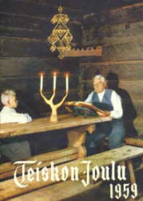
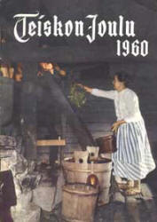
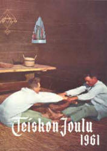

Lehden historia
Teisko-Seuran vuoden 1956 vuosikertomuksen otteessa kerrotaan: ”Edellisenä vuotena aloitettu kyläiltatoiminta on kuluneena vuotena ollut vähäisempää, koska seura julkaisi Teiskon Joulu –nimisen joululehden, mikä vasta syksyllä otettiin lopullisesti tavoitteeksi ja näin lyhyeksi muodostuneen toimitusajan takia sitoi johtokunnan tähän tehtävään.
Edellä mainittu joulujulkaisu onnistui kuitenkin olosuhteisiin katsoen erittäin hyvin. Se ilmestyi joulukuun alkupuolella tuhannen kappaleen painoksena ja ehdittiin vielä järjestää myyntiin kohtalaisen hyvin. Pitäjäläiset ottivat lehden vastaan hyvin suopeasti joten menekki oli tyydyttävä.”
Vuonna 2005 tehtiin Teiskon Joulu –lehden 50. vuosikerta. Lehden toimitusaika tuntuu olevan suunnilleen samanmoinen kuin alkutaipaleella, joskin nykyajan sähköinen tiedonkulku, taitto-ohjelmat ja painotekniikka ovat varmasti helpottaneet lehden tekemisen olosuhteita.
Ensimmäisen Teiskon Joulun lukijoita toimitus tervehtii pääkirjoituksella, jonka lopusta voi lukea ilmeisesti päätoimittaja Sulho Mikolan kirjoittamat lauseet: ”Nyt esittäytyvä Teiskon Joulu liittyy uutena renkaana Teisko-Seuran toimintaan. Jos ehkä nuoruuden kokemattomuus haitanneekin lehteämme, niin toivomme iän mukana karttuvan tietoa ja viisautta.”

Lehden kannet eivät ole vuosien saatossa noudattaneet selvää linjaa: talvisten maisema- ja rakennuskuvien sekä joulun ajan aiheisiin liittyvien valokuvien ohessa nähtävänä on ollut myös kesäistä järvenpintaa, ryhmäkuvia kuoroista ja yhdistyksistä sekä muutama lapsi- ja eläinaihe. Mainittava on myös vuoden 1971 kansikuva, joka ilmeisesti seuraavana vuonna tapahtuvan kuntaliitoksen innoittamana oli Teiskon vaakuna. Mielenkiintoinen kansikuvasarja oli pääasiallisesti 1960-luvulle sijoittuva reportaasinomainen perinnetöitä ja -tilaisuuksia kuvaava kokonaisuus, jossa nähdään otteita menneen ajan joulun valmistelusta leipomisineen, saunomisineen, aterioineen ja leikkeineen.
Teiskon Joulu –lehden tarkoitus on vuodesta toiseen ollut sama: olla se hyvä lehti, josta löytyy luettavaa kaikille. Lehdessä on terveisiä jokaiselle: on kertomuksia Teiskoon liittyvistä historiallisista tapahtumista ja henkilöistä, perinnettä ja kotiseuturakkautta, on tuulahduksia maailmalta. Kuvia, tarinoita, hyvän joulun toivotuksia…
Kiteytettynä vuoden 2000 päätoimittajan Kirsti Tonin pääkirjoituksen sanoin: ”Teiskon Joulun toimituskunta toivoo, että joululehdestämme tänäkin vuonna löytyy sopivaa luettavaa eri asioista kiinnostuneille lukijoille. Lehtemme tuntuu olevan monelle yksi jouluun liittyvä perinne, jota odotetaan ja arvostetaan.”
Yksi kotiseututyön tehtävistä on perinteen säilyttäminen, joten Teiskon Joulu elää ja ilmestyy tulevinakin vuosina. Ehkä samanlaisena, ehkä uudistettuna - kuitenkin kaikkien teiskolaisten ja Teiskon ystävien yhteisenä lehtenä.
|  |  |  |